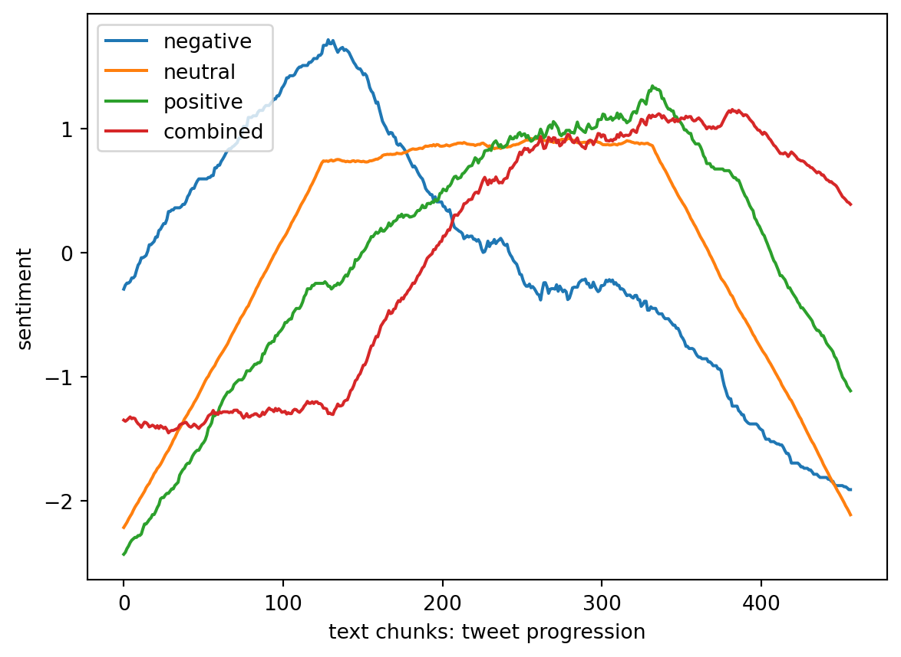

The page below will describe my associative rule mining analysis, which was conducted using data retrieved from the News API.
ARM, or Associative Rule Mining, is a critical tool in Data Science which aids in evaluating several business decisions. Data mining is the process of deriving trends, patterns, and useful information from a massive amount of data. The data mining process of discovering the rules that govern associations and causal objects between sets of items is known as Associative Rule Mining. It is useful in discovering relationships between databases that seem to be independent, thereby unveiling relationships in data that we didn’t know previously existed.
Associative Rule Mining is a technique which is used to identify frequent patterns, correlations, and associations in datasets found in a variety of databases, including relational databases, transcational databases, and other types of repositories. Associative Rule Mining, contrary to most data models, is appropriate for non-numeric, categorical data, and requires more than simple counting. Thus, given a set of transactions, the goal of ARM is to find the rules that predict the occurrence of a specific item, based on the occurrence of other items in the same dataset.
Theory
Apriori Algorithm for ARM
Several statistical algorithms have been developed to implement associative rule mining, and Apriori is one such algorithm which is used for ARM. In the following section, we will learn about the theory behind the Apriori algorithm, and later see its implementation in python using data extracted from a News API.
There are three main components of the Apriori Algorithm:
Support
Confidence
Lift
Support
Support refers to the default popularity of an item and can be calculated by finding the number of transactions containing a particular item, divided by the total number of transactions. Suppose, we wanted to evaluate the support for item X, we would calculate it as:
Confidence refers to the likelihood that an item Y exists if an item X exists as well. It can be computed by finding the number of transactions where X and Y exist together, divided by the total number of transactions whihc contains X. Mathematically, it would be calculated as:
Confidence(Y,X) = (Transactions containing both X and Y)/(Transactions containing X)
Lift
Lift(X,Y) refers to the increase in the ratio of prevalence of Y when A exists. Lift(X,Y) can be calculated by dividing Confidence(X,Y) divided by Support(Y). Mathematically, it can be represented as:
Lift(X,Y) = (Confidence(X,Y))/(Support(Y))
The concept of lift basically tells us the ratio of the likelihood of X and Y together in relation to the likelihood of just Y. A lift of 1 means that there is no association between X and Y. A lift which is greater than 1 tells as that X and Y are likely to exist together. Finally, a lift which is less than 1 tells us that X and Y are not likely to exist together.
Steps Involved in Apriori Algorithm
For large sets of data, which are used in most cases in the field of Data Science, there can be hundreds of items and thus, several thousands of relationships between items using each possible combination of items. This process can be extrmeely slow due to the several thousands of combinations that exist, and thus, some steps need to be performed to speed up this process of conducting the Apriori Algorithm:
Compute the support for each individual item
Decide the support threshold
Select the frequent items
Find the support of the frequent items
Repeat for larger datasets
Generate association rules and compute confidence
Compute lift
Methods
Code
# Importsimport nltkimport stringfrom nltk.stem import WordNetLemmatizerfrom nltk.stem import PorterStemmerfrom nltk.corpus import stopwordsfrom nltk.tokenize import word_tokenize, sent_tokenizefrom nltk.sentiment import SentimentIntensityAnalyzerimport osimport matplotlib.pyplot as pltimport numpy as npimport pandas as pdfrom apyori import aprioriimport networkx as nx import warningsnltk.download('stopwords')nltk.download('vader_lexicon')warnings.filterwarnings("ignore")
[nltk_data] Downloading package stopwords to
[nltk_data] /Users/raunakadvani/nltk_data...
[nltk_data] Package stopwords is already up-to-date!
[nltk_data] Downloading package vader_lexicon to
[nltk_data] /Users/raunakadvani/nltk_data...
[nltk_data] Package vader_lexicon is already up-to-date!
# Referred from Professor Nakul's example code# USER PARAMinput_path = dfcompute_sentiment =Truesentiment = [] # average sentiment of each chunk of text ave_window_size =250# size of scanning window for moving average# OUTPUT FILEoutput='transactions.txt'if os.path.exists(output): os.remove(output)# INITIALIZElemmatizer = WordNetLemmatizer()ps = PorterStemmer()sia = SentimentIntensityAnalyzer()# ADD MOREstopwords = stopwords.words('english')add=['mr','mrs','wa','dr','said','back','could','one','looked','like','know','around','dont']for sp in add: stopwords.append(sp)def read_and_clean(path,START=0,STOP=-1):global sentiment sentences = []for sentence in path['final_news']: sentences.append(sentence) print("NUMBER OF SENTENCES FOUND:",len(sentences));# CLEAN AND LEMMATIZE keep='0123456789abcdefghijklmnopqrstuvwxy' new_sentences=[];vocabulary=[]for sentence in sentences: new_sentence=''# REBUILD LEMMATIZED SENTENCEfor word in sentence.split():# ONLY KEEP CHAR IN "keep" tmp2=''for char in word: if(char in keep): tmp2=tmp2+charelse: tmp2=tmp2+' ' word=tmp2#-----------------------# LEMMATIZE THE WORDS#----------------------- new_word = lemmatizer.lemmatize(word)# REMOVE WHITE SPACES new_word=new_word.replace(' ', '')# BUILD NEW SENTENCE BACK UPif new_word notin stopwords:if new_sentence=='': new_sentence=new_wordelse: new_sentence=new_sentence+','+new_wordif new_word notin vocabulary: vocabulary.append(new_word)# SAVE (LIST OF LISTS) new_sentences.append(new_sentence.split(","))# SIAif(compute_sentiment):#-----------------------# USE NLTK TO DO SENTIMENT ANALYSIS #----------------------- text1=new_sentence.replace(',', ' ') ss = sia.polarity_scores(text1) sentiment.append([ss['neg'], ss['neu'], ss['pos'], ss['compound']])# SAVE SENTENCE TO OUTPUT FILEif(len(new_sentence.split(','))>2): f =open(output, "a") f.write(new_sentence+"\n") f.close() sentiment=np.array(sentiment)print("TOTAL AVERAGE SENTIMENT: ",np.mean(sentiment,axis=0))print("VOCAB LENGTH: ",len(vocabulary))return new_sentences
TOTAL AVERAGE SENTIMENT: [0.11820395 0.75416447 0.1276557 0.03419912]
VOCAB LENGTH: 2291
0
1
2
3
4
5
6
7
8
9
...
16
17
18
19
20
21
22
23
24
25
0
riyadh
oct
reuters
global
recession
avoided
government
fiscal
policy
consistent
...
falling
recession
n
char
None
None
None
None
None
None
1
melbourne
sept
reuters
oil
price
dipped
early
trade
friday
extending
...
escalating
fear
sharp
interest
rate
hike
slam
char
None
None
2
posted
bank
england
raised
key
interest
rate
thursday
september
would
...
eco
char
None
None
None
None
None
None
None
None
3
washington
sept
reuters
downside
risk
continue
dominate
global
economic
outlook
...
wil
char
None
None
None
None
None
None
None
None
4
london
sept
reuters
sterling
surrendered
gain
dollar
euro
thursday
bank
...
respond
forcefully
char
None
None
None
None
None
None
None
5 rows × 26 columns
Visualize the Sentiment
Code
def moving_ave(y,w=100):#-----------------------# COMPUTE THE MOVING AVERAGE OF A SIGNAL Y#----------------------- mask=np.ones((1,w))/w; mask=mask[0,:]return np.convolve(y,mask,'same')# VISUALIZE THE SENTIMENT ANALYSIS AS A TIME-SERIES# this is activated by compute_sentiment = True in the first cellif (compute_sentiment):# take sentiment moving ave and renormalize neg=moving_ave(sentiment[:,0], ave_window_size) neg=(neg-np.mean(neg))/np.std(neg) neu=moving_ave(sentiment[:,1], ave_window_size) neu=(neu-np.mean(neu))/np.std(neu) pos=moving_ave(sentiment[:,2], ave_window_size) pos=(pos-np.mean(pos))/np.std(pos) cmpd=moving_ave(sentiment[:,3], ave_window_size) cmpd=(cmpd-np.mean(cmpd))/np.std(cmpd)# Plot sentiment indx = np.linspace(0,len(sentiment), len(sentiment)) plt.plot(indx, neg, label="negative") plt.plot(indx, neu, label="neutral") plt.plot(indx, pos, label="positive") plt.plot(indx, cmpd, label="combined") plt.legend(loc="upper left") plt.xlabel("text chunks: tweet progression") plt.ylabel("sentiment") plt.show()

Re-format the Output
Code
# RE-FORMAT THE APRIORI OUTPUT INTO A PANDAS DATA-FRAME WITH COLUMNS "rhs","lhs","supp","conf","supp x conf","lift"def reformat_results(results):# CLEAN-UP RESULTS keep=[]for i inrange(0,len(results)):for j inrange(0,len(list(results[i]))):if(j>1):for k inrange(0,len(list(results[i][j]))):if(len(results[i][j][k][0])!=0): rhs=list(results[i][j][k][0]) lhs=list(results[i][j][k][1]) conf=float(results[i][j][k][2]) lift=float(results[i][j][k][3]) keep.append([rhs,lhs,supp,conf,supp*conf,lift])if(j==1): supp=results[i][j]return pd.DataFrame(keep, columns =["rhs","lhs","supp","conf","supp x conf","lift"])
Utility Function: Convert to NetworkX Object
Code
def convert_to_network(df):print(df)# BUILD GRAPH G = nx.DiGraph() # DIRECTEDfor row in df.iterrows():# for column in df.columns: lhs="_".join(row[1][0]) rhs="_".join(row[1][1]) conf=row[1][3];#print(conf)if(lhs notin G.nodes): G.add_node(lhs)if(rhs notin G.nodes): G.add_node(rhs) edge=(lhs,rhs)if edge notin G.edges: G.add_edge(lhs, rhs, weight=conf)# print(G.nodes)# print(G.edges)return G
Utility Function: Plot NetworkX Object
Code
def plot_network(G):# SPECIFIY X-Y POSITIONS FOR PLOTTING pos=nx.random_layout(G)# GENERATE PLOT fig, ax = plt.subplots() fig.set_size_inches(15, 15)# assign colors based on attributes weights_e = [G[u][v]['weight'] for u,v in G.edges()]# SAMPLE CMAP FOR COLORS cmap=plt.cm.get_cmap('Blues') colors_e = [cmap(G[u][v]['weight']*10) for u,v in G.edges()]# PLOT nx.draw( G, edgecolors="black", edge_color=colors_e, node_size=2000, linewidths=2, font_size=8, font_color="white", font_weight="bold", width=weights_e, with_labels=True, pos=pos, ax=ax ) ax.set(title='ARM on Text Data(Tweets)') plt.show()
Train ARM model by applying Apriori
The next step of the process is to apply the Apriori algorithm on the dataset. To do this, we can utilize the apriori class that we imported from the apyori library.
The apriori class requires us to use some parameter values for it to work. The first parameter which needs to be used is that list of list from which we want to extract rules. Next, the second parameter is the min_support parameter. This parameter is used to select the items from the data which have support values that are greater than the value specified by the parameter. Next, the min_confidence parameter filters those rules that have confidence which is greater than the confidence threshold which is specified by the parameter. Next, the min_lift parameter specifies the minimum lift value for the listed rules. Lastly, the min_length parameter specifies the minimum number of items that we would like in our rules.
Code
# TRAIN THE ARM MODEL USING THE "apriori" PACKAGEprint("Transactions:",texT)# Run Apriori algorithmresults =list(apriori(transactions, min_support=0.3, min_confidence=0.2, min_length=2, max_length=5, min_lift =1))
Transactions: 0 1 2 3 4 5 \
0 riyadh oct reuters global recession avoided
1 melbourne sept reuters oil price dipped
2 posted bank england raised key interest
3 washington sept reuters downside risk continue
4 london sept reuters sterling surrendered gain
.. ... ... ... ... ... ...
451 though briefly dipped early august average
452 u treasury secretary janet yellen hopeful
453 likely u inflation start cool soon
454 china yuan weakened lowest level since
455 insider expert choose best product service
6 7 8 9 ... 16 17 \
0 government fiscal policy consistent ... falling recession
1 early trade friday extending ... escalating fear
2 rate thursday september would ... eco char
3 dominate global economic outlook ... wil char
4 dollar euro thursday bank ... respond forcefully
.. ... ... ... ... ... ... ...
451 year fixed mortgage rate ... increased char
452 federal reserve achieve soft ... going need
453 imbalance labor market still ... according top
454 july thursday covid lockdown ... offshore currency
455 help make smart decision ... opinion char
18 19 20 21 22 23 24 25
0 n char None None None None None None
1 sharp interest rate hike slam char None None
2 None None None None None None None None
3 None None None None None None None None
4 char None None None None None None None
.. ... ... ... ... ... ... ... ...
451 None None None None None None None None
452 great skill also good luc char None None
453 goldman sachs strate char None None None None
454 rate dropped char None None None None None
455 None None None None None None None None
[456 rows x 26 columns]
Results
First, let’s take a look at the total number of rules mined by the apriori class
Code
print(len(results))
17
Each item from the list above corresponds to one rule
Now, let’s print a random item to see the first rule
The first item in the list is ‘interest’. The first item shows the related word in the rule
The support value for this first rule is 0.33. This number is computed by dividing the number of transactions containing ‘interest’ divided by the total number of transactions.
The confidence level for this rule is 0.33, which tells us that out of all the transactions that contain ‘interest’, approximately 33% of them also contain ‘rate’.
Lastly, the lift of 2.42 tells us that ‘rate’ is 2.42 times more likely to occur in a transaction containing the word ‘interest’ compared to the default likelihood of the occurence of ‘rate’.
Code
# Use the utility function to reformat the outputresult_df = reformat_results(results)
Visualize the Results
Code
# PLOT THE RESULTS AS A NETWORK-X OBJECTpd_results = reformat_results(results)G = convert_to_network(result_df)print(G)plot_network(G)
In conclusion, we can see that there are several relations from the rules that can be seen from the network graph. At this critical juncture, the dependency on data for driving business decisions has increased to a great extent. Data Mining is one such method that helps in decision making. It is the process of deriving trends, patterns, and useful information from a massive amount of data. The data mining process of discovering the rules that govern associations and causal objects between sets of items can be extremely helpful in making business decisions. It helps in discovering relationships between databases that seem to be independent thus developing connections between datasets.